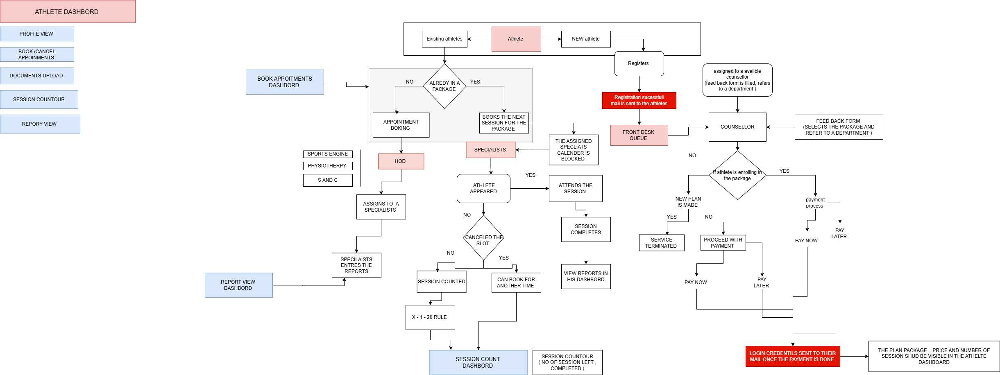

Use your mouse wheel to zoom, and click/drag to pan across the flowchart.

HOD FLOW
1. Executive Summary
The HOD Module serves as a high-level managerial and clinical oversight hub. A Head of Department uses
this portal to manage their specific clinical team, route incoming patient requests, oversee
departmental schedules, review performance reports, and track their own daily attendance.
2. Phase 1: Departmental Oversight & Reporting
The HOD operates as the leader for a specific clinical or scientific vertical. From their central
dashboard, they have direct access to oversee operations within the following Departments:
Sports Engine
Physiotherapy
Psychology
Physiology
Nutrition
In addition to overseeing their specific department, the HOD has high-level administrative access to two
key data streams:
Interns: Direct visibility into the intern cohort assigned to their department.
Reports View / Edit: Access to vital clinical and operational reports, with
permissions to both view and edit the data as required for departmental management.
The HOD plays a critical role in managing the intake and flow of clients through their department using
the Clinical Dashboard.
Request Management & Assignment: The HOD receives incoming Requests from various
user types (Athletes, Visitors, Members).
After reviewing the request, the HOD executes the critical action of Assign to the specialists,
routing the client to the appropriate professional within their department.
Appointment Administration: The HOD retains high-level administrative control over
the department's booking queue, with the authority to directly Cancel Appointment or Reschedule
Appointment as operational needs or specialist availability dictates.
4. Phase 3: Scheduler & Calendar Oversight
To effectively manage their team and their own clinical load, the HOD integrates deeply with the
Scheduler module.
Dual-View Calendar: The HOD accesses a centralized Calendar that aggregates two distinct
data feeds:
HOD Scheduled Appointments for the day: Their personal clinical or administrative
appointments.
Schedule of the specialist under them: A macro-view of the daily schedules of all
specialists operating within their specific department. This allows the HOD to monitor workload,
availability, and clinical throughput.
5. Phase 4: Daily Attendance Tracking
Like all staff within the facility, the HOD must log their daily status via the Attendance Module. This
begins with the IF IN OFFICE decision node:
Scenario A: On-Site (YES)
The HOD is directed to Marks In Office.
They must Select Location to specify where they are operating within the facility that day.
This action marks them as active. At the conclusion of their shift, they trigger the Mark End of Day
command.
Scenario B: Off-Site / Leave (NO)
The system routes them to Out of Office.
To successfully log this status, the HOD must input a specific Reason and their current Location.
They conclude their status by triggering Mark End of Day.
SPECIALISTS & MENTORS FLOW
1. Executive Summary
The Specialists Module governs the lifecycle and daily operations of clinical and coaching
professionals within the system. It tracks their onboarding, manages their daily physical
attendance, aggregates their availability into the central Scheduler, and dictates how different
client types (New, Interns, Existing Athletes) are routed to them based on real-time availability.
2. Phase 1: Specialist Onboarding & Access
Before a Specialist can interact with clients, they must go through a formal system onboarding
process.
Registration & Document Verification:
A new specialist enters the system via the REGISTER node.
They are required to complete a DOCUMENT UPLOAD step (providing credentials, certifications,
etc.).
The system routes these documents for VERIFICATION.
IT Integration:
Once verified, IT SUPPORT takes over to formally ONBOARD THE SPECIALISTS into the backend.
Credential Generation & Access:
An automated action triggers, and Login Credentials are sent to the mail (highlighted as a
critical system action).
Using these credentials, the specialist can now ACCESS THEIR DASHBOARD, allowing them to
interact with the rest of the system's modules.
The Specialist dashboard integrates directly with the ATTENDANCE MODULE to determine their daily
availability for appointments. Every day begins with an IF IN OFFICE decision node:
Scenario A: On-Site (YES)
The system directs the specialist to MARKS IN OFFICE.
They must SELECT LOCATION (specifying their desk, lab, or clinical room).
This action immediately flags their profile as "Active" and pushes their availability to the
central SCHEDULER. (This same "In Office" rule applies to Mentors and Counsellors).
At the end of their shift, they trigger MARK END OF DAY.
Scenario B: Off-Site / Leave (NO)
The system routes them to OUT OF OFFICE.
They must provide a REASON and their current LOCATION.
They remain inactive in the live booking Scheduler for that day.
They conclude their status by triggering MARK END OF DAY.
4. Phase 3: The Scheduler Engine (Input Aggregation)
The SCHEDULER acts as the central brain of this flow, aggregating availability and obligations from
multiple sources:
Live Staff Availability: It pulls the "In Office" status of MENTORS,
COUNSELLORS, and SPECIALISTS.
Mentor Schedule Feed: It integrates the MENTOR SCHEDULE, which is pre-populated
by three specific administrative inputs:
INTERN EVALUATION
INTERN ASSESSMENTS
CLASSES
Counsellor Feed: Direct inputs from Counsellor schedules.
5. Phase 4: Client Routing & Appointment Handling
When a booking request hits the Scheduler, the system evaluates the IF AVAILABLE SPECIALISTS decision
node. Based on availability and the user's profile type, the system executes targeted routing:
Standard Routing Paths (Available):
NEW REGISTER: Newly registered users are automatically routed to a COUNSELLOR
for initial intake and package assignment.
INTERN: Interns are strictly routed to a MENTOR for their evaluations,
assessments, and scheduled classes.
EXISTING ATHLETE: Returning clients with active plans are routed directly to
the appropriate SPECIALISTS for their treatment or training sessions.
Exception Handling (Sudden Unavailability):
If an assigned specialist becomes unexpectedly unavailable (e.g., medical emergency, abrupt
out-of-office status), the system triggers the SUDDEN UNAVAILABILITY protocol.
The system executes a TRANSFER TO OTHER SPECIALISTS command, reassigning the athlete's slot to
the next available professional with matching qualifications to ensure service continuity.
6. Sidebar Navigation (Quick Access)
Throughout this flow, the user interface provides a persistent left-hand menu for quick navigation
between core modules:
SPECIALISTS: Returns to the main specialist dashboard.
MENTOR: Access to intern-related schedules and assessments.
COUNSELLOR: Access to new intake profiles.
ATTENDANCE: Direct link to the clock-in/out module.
VIEW/EDIT REPORT: Access to clinical, daily, or system reports based on the
specialist's granted edit permissions.
DEPARTMENT FLOW
Physiotherapy Flow
The athlete enters through registration and is assigned to a counsellor. After counselling and
referral, the athlete is directed to Physiotherapy.
The process begins with assessment and clinical diagnosis, followed by goal setting, treatment
planning, and financial discussion with consent. Once confirmed, the treatment phase begins.
The athlete undergoes regular therapy sessions with continuous progress tracking and weekly logs.
Testing may be conducted to evaluate improvement. Based on progress, a decision is made whether to
continue sessions or proceed toward return to sport.
If recovery is achieved, the athlete transitions to return to sport, followed by a follow-up and
retention phase to ensure long-term recovery.
Strength & Conditioning (S&C) Flow
After counselling and referral, the athlete is directed to the Strength & Conditioning
department.
The process starts with athlete information, followed by selecting the training type such as
strength, power, agility, speed, endurance, or recovery. Training session details including
duration, intensity, and session RPE are recorded.
Performance metrics are then captured, including strength data, endurance data, and speed/power
metrics. Recovery status is monitored based on factors like fatigue and muscle soreness.
Coach notes are added, and all data is saved to the athlete monitoring database. This data is then
reflected in the performance dashboard for the coach, completing the training cycle.
Sports Science Flow
After referral, if testing is required, the athlete is directed to the Sports Science department.
An appointment is scheduled, and testing is conducted over one or more days depending on the number
of tests. These tests include multiple performance and health assessments based on the athlete’s
sport.
Testing records are entered and saved, followed by data analysis and interpretation by the sports
scientist. Based on the findings, reports are generated.
These reports are discussed with relevant departments such as S&C and Physiotherapy. Multiple
versions of reports are shared with stakeholders including the athlete, parents, specialists, and
coaches.
Finally, the athlete proceeds to the appropriate program, such as Physiotherapy or S&C,
completing the process.
MENTORS MODULES
Interns list :-
This tab displays the list of all interns assigned to the mentor.
The mentor can view details such as the intern’s name, batch, college, and current assessment
status.
Each intern has multiple assessment options (e.g., Sports Science, Sports Physio, Clinical
Physio, Strength & Conditioning).
By clicking on any of these assessment buttons, the mentor can open the evaluation form for that
specific domain.
Assessments :-
This tab allows the mentor to evaluate an intern’s performance in a specific domain.
The mentor can rate the intern’s skills (e.g., professionalism, communication, proactiveness,
responsibility) on a defined scale (1–5).
The mentor selects the week, date, and relevant department, then provides ratings based on the
intern’s performance in that particular domain.
COUNSELLOR ROLE
After the Front Desk assigns a counsellor, the case will appear on the counsellor dashboard.
The counsellor should click on the “View Profile & Counsel” option. This
will display the basic demographics of the athlete.
The counsellor understands the athlete’s concerns, enquires about their reason for
visiting, and discusses suitable packages.
They record key insights from the discussion, confirm financial consent, and note any important
observations or internal remarks.
Based on the interaction, they decide the next step, refer the athlete to the appropriate
department if required, and mark the counselling as completed.
SPECIALIST SCHEDULER
In the calendar view, they can see the people assigned to them and cancel their allocated
appointments.
IT DEPARTMENT & SUPPORT FLOW
The IT Department serves as the central hub for system administration, managing user onboarding,
role-based access, security, system configurations, and attendance tracking across all
organizational departments.
1. Phase 1: User Onboarding & Communications
The IT Department oversees the initial entry of various user profiles into the system through the
Onboard module.
User Categories: The system accepts onboarding for four primary user groups:
Interns
Staffs
Athlete
Company / Coach / College
Communication Integration: The Onboarding module is heavily integrated with the
system's communication tools.
Mail Templates: The system utilizes standardized templates to automatically
dispatch necessary emails, specifically the Registration Mail and the Login Credentials Mail.
In-App Notifications: As users are successfully onboarded, the system triggers
real-time In-app Notifications to alert relevant parties.
2. Phase 2: Access Control & Role Management
A critical function of the IT Department is managing what users can see and do within the system.
This is divided into two main streams:
Role Access: The system assigns and regulates access based on defined
administrative and operational roles. These roles include:
Departments
Mentor
Counsellor
Intern Co-ordinator
HOD (Head of Department)
Center Head
Front Desk
Edit Permissions & Reporting: Separate from general role access, the IT hub
handles specific Edit Permissions, which govern a user's ability to interact with the Reports
Access / Edit module (allowing users to view or modify system reports).
3. Phase 3: Security & Staff Lifecycle Management
The IT Department handles the administrative backend of staff management and system security.
Account Suspension: If staff members are offboarded or terminated, the Remove
Staffs trigger is activated, which pushes a Suspend command to the IT Department, immediately
revoking access.
Credential Management: For ongoing security, a user requesting a Change Login
Password routes through the Reset Passwords module, which the IT Department processes to restore
secure access.
4. Phase 4: System Configuration (Engine Duplication)
The IT Department manages the overarching platform interface and functional capabilities through the
Engine Duplication module. This allows the system to be customized or white-labeled:
Changing Logo: Updating visual branding across the platform.
Functional Control: Toggling specific system features or capabilities on or off
based on organizational needs.
The IT Department powers the core Attendance module, which tracks user activity across various
facility departments.
Attendance Controls: The Attendance system evaluates and executes three primary
functions for users:
Activate (Starting a session)
Deactivate (Ending a session)
Time Limit (Enforcing session duration caps)
Departmental Inputs: These attendance controls are directly driven by data and
user interactions originating from specific Departments, which include:
HOD
Physiotherapy
Psychology (noted as 'Psychology' in the system diagram)
Sports Science
Interns
IT SCHEDULER
Scheduler view for IT & Front Desk:-
Can view all the activities happening in the entire system. Assign counselling to a specialist and
send the athlete to the department HOD based on the counselling report. The front desk can override
a blocked slot. Book slots and cancel booked slots based on rules.
ATHLETE & VISITOR HUB
The Athlete & Visitor Hub manages onboarding and access control by tracking user status and enabling the IT team to grant, activate, or resend system access.
INTERNS MANAGEMENT
The Interns section maintains intern records and login credentials, allowing the IT team to manage and reset access for smooth system usage.
JOINING FORM HUB
The Joining Form Hub controls the onboarding data collection process by managing form structures and tracking submitted entries.
MESSAGES & NOTIFICATIONS
The Messages & Notifications section handles automated communication by managing email templates used during registration, onboarding, and system events.
USER & ACCESS CONTROL
The User & Access Control section manages system users, roles, and permissions, ensuring secure and role-based access across all modules.
ATHLETE FLOW
1. Athlete Entry into the System
The athlete journey begins when an individual approaches the organization as either a New Athlete or an
Existing Athlete.
New Athlete Flow
A new athlete must first complete the Registration process. After successful registration:
The athlete is moved into the Front Desk Queue.
A Counsellor is assigned based on staff availability.
The assigned Counsellor fills out a Feedback/Assessment Form, identifies performance needs, and
refers the athlete to the appropriate department (Sports Science, Physiotherapy, or S&C).
2. Package Decision & Payment Pathway
Scenario A (No Package): A new plan is proposed or service is terminated. If
proceeding with standalone services, the athlete pays at the Front Desk.
Scenario B (Enrollment): The athlete proceeds to Payment Processing. Upon success,
Login Credentials are emailed, and the package details (Price/Sessions) become visible in their
portal.
3. Athlete Dashboard Capabilities
The Dashboard serves as the primary interface for the athlete to:
View Profile and Reports.
Book / Cancel Appointments (subject to system rules).
Upload Documents and monitor Session Count.
4. Appointment Booking Workflow & The X-1-10 Rule
When the athlete accesses the booking dashboard, the system initiates a logic check based on their
package status. Regardless of the package, all bookings must satisfy the X-1-10 Rule:
The Booking Rule (X-1-10):
When booking an appointment at Time X, the system validates that the previous appointment ended at least
10 minutes before X.
Condition: Previous Appointment End Time ≤ X – 10 minutes.
Validation: The system accounts for session durations (30 mins for Physio, 60 mins
for S&C) to calculate the previous end time.
Outcome: If the buffer is insufficient, the booking is Rejected.
5. Session Attendance & The X-1-20 Cancellation Rule
On the scheduled day, the system evaluates attendance and enforces the cancellation policy:
If Athlete Attends: The session is marked Completed and reports are generated.
If Athlete Does Not Attend (No-Show): The session is officially Counted and
Deducted from the package balance.
If Athlete Cancels (X-1-20 Rule): To avoid a session deduction, the athlete must
cancel according to the following logic:
The Cancellation Rule (X-1-20):
A cancellation at Time X is only valid if the previous appointment in that slot/specialist's track ended
at least 20 minutes before X.
Condition: Previous Appointment End Time ≤ X – 20 minutes.
Outcome: If satisfied, the session is not deducted, and the slot is released for
others.
6. Specialist Reporting Workflow
After each completed session, specialists enter performance or medical data into the database. Athletes
maintain total transparency by viewing these updates via the Report View Dashboard.
7. Department Assignment Engine
The HOD assigns the athlete to a primary track (Sports Engine, Physiotherapy, or S&C). This assignment
dictates:
Physiotherapy sessions: Fixed at 30-minute blocks.
S&C sessions: Fixed at 60-minute blocks.
The assignment of a specific Specialist and the parameters for evaluation.
8. Session Contour & Progress Monitoring
The Session Contour Dashboard dynamically reflects package utilization.
Athletes monitor personal usage.
Front Desk forecasts renewals.
Specialists plan training continuity based on remaining sessions.
9. Package Renewal / Continuation Logic
As the balance reaches zero, the athlete—guided by Specialist reports and Counselor
feedback—chooses to:
Renew or Upgrade the current plan.
Shift Department (e.g., transitioning from Physio rehab to S&C performance).
Terminate Service upon reaching their goals.
INTERN FLOW
1. Intern Entry into the System
The intern onboarding journey begins when a candidate joins the organization through either:
Batch Internship Program
Independent Internship Program
Both types of interns are required to complete the Registration process. After successful registration,
the intern is moved into the Front Desk Queue, where the administrative team verifies:
Internship registration details
Payment confirmation (if applicable)
Once payment verification is completed, the intern proceeds to the formal onboarding stage.
2. Intern Onboarding & Credential Creation
During the onboarding phase:
The Front Desk team officially onboards the intern into the system.
Login credentials are generated and sent to the intern's email.
The intern is now officially marked as an Active Intern.
At this stage, interns are assigned weekly to specific departments and mapped to Mentors for training and
supervision.
3. Department Allocation & Mentorship
Each intern is assigned to specialized clinical or performance departments, such as:
Physiotherapy
Biomechanics
Strength & Conditioning
To ensure both theoretical and applied learning exposure, interns are required to attend Weekly classes
and execute Mentor-assigned practical tasks.
4. Dashboard Access & IT Support Enablement
Once onboarding is completed, IT Support provisions access to the Intern Dashboard. This dashboard acts
as the central working interface for interns, enabling them to manage:
Profile Information
Pre-evaluation forms
Assessments
Attendance tracking
Document uploads
Weekly progress reports
Final evaluation marks
5. Task Assignment & Data Entry Workflow
Interns receive specific departmental tasks. When specialists assign an intern to assist them:
The intern is responsible for entering athlete/session data into the system.
Data entry is executed through the Front Desk Interface or the Data Entry Module.
After submission, the entered data becomes visible in specific athlete reports.
The data is then Verified by Specialists to ensure accuracy and supervised learning.
6. Weekly Evaluation Cycle
Intern performance is continuously monitored through a strict weekly evaluation mechanism:
Week 1 Evaluation
Week 2 Evaluation
Week 3 Evaluation
Week 4 Evaluation as a test + final assesments
Additionally, every 6th day of the week, a test is conducted. This creates a structured performance
tracking loop combining:
Practical task review
Knowledge assessment
Mentor feedback
7. Final Evaluation & HOD Review
After the completion of all weekly evaluations:
A Final Assessment is conducted.
Post-assessment, the intern’s overall performance is reviewed by the Department HOD (Head of
Department).
The HOD determines whether the intern is eligible for formal certification and progression.
8. Certification Eligibility Decision Flow
If the HOD determines the intern is eligible, the next decision depends on their financial clearance:
Scenario A: If College Fees / Internship Fees are Paid
The Certificate is issued.
A Certification email is sent directly to the intern.
The internship process is successfully closed.
Scenario B: If Fees are Not Paid
Certificate access is blocked in the system.
A Notification mail is sent to the intern (or college) requesting fee payment.
The certificate is officially issued only after payment clearance.
9. Post-Internship Outcome Pathways
After the tests and final assessments, an additional eligibility evaluation occurs for top performers.
If Shortlisted as an Eligible Candidate: The intern is moved into one of the following progression
pathways:
Hire Plan (Full-time Opportunity)
Further Internship Extension
Waitlist for Future Opportunities
(If not shortlisted, the internship cycle formally concludes after certification).
10. Continuous Learning Loop
Throughout the entire lifecycle of the internship, a closed learning-performance-improvement loop is
maintained. Interns continuously receive:
Weekly classes
Mentor assignments
Practical exposure
Evaluation feedback
REGISTRATION MODULE
1. User Entry into the System
The process begins when a user interacts with the system. Users are categorized into specific roles to
determine their correct onboarding path. The categories include:
Interns
Visitors
Athletes
Special Athletes
Organizations (Specifically including DYES Geethana Government Employees)
2. New Visitor Verification
Once a user enters the system, the first decision node evaluates: IF NEW VISITOR.
Existing Users: Bypass registration and proceed directly to their respective
dashboards or scheduling.
New Users: Must complete the registration process.
3. Registration Channels
New users proceed to Registration, which is tracked through specific channels and their corresponding use
cases:
QR Code: Used primarily for instant walk-in registrations at the facility.
Link (Batch): Utilized for batch-wise or group registrations (e.g., teams or
institutions).
Social Media: Driven by online promotions and marketing campaigns.
Website: Used by individuals looking to directly schedule slots.
4. Registration Success Confirmation
Upon submitting the registration details through any of the above channels, the system triggers an
automated action:
A "Registration Successful" confirmation is sent to the user's email from the address:
registration@iiitmysports.com.
5. Front Desk Approval & Intern Branching
The profile is then routed to Front Desk Approval. Here, the system hits a critical branching node:
IF INTERN.
If YES (The user is an Intern):
They are routed to Payment and Document Verification.
Once verified, they move to Onboard the Interns, which involves assistance from IT Support.
The intern is then mapped to the relevant Departments (Admin, Front Desk, Psychology,
Biomechanics, Physiotherapy, Counsellors, Massage).
They are directly connected to the Counsellor node.
If NO (The user is a standard Athlete/Visitor/Org):
They bypass the onboarding pipeline and are routed directly to the Scheduler.
6. Scheduling & DYES Session Monitoring
For standard users arriving at the Scheduler, the system actively monitors organizational caps:
Alert Generation: If the limit is exceeded, an alert message is immediately
displayed on both the Front Desk Dashboard and the Counsellor Dashboard.
DYES 500 Sessions Over Rule: The system checks if the user belongs to DYES and if
they have exceeded 500 sessions.
7. Counsellor Assignment & Interaction
The system proceeds to Assign Counsellor.
The Counsellor evaluates the user's needs, interacting with the various Departments as necessary to build
an appropriate treatment or service plan.
Following the session, a Feedback Form is completed, and the user is formally referred to the required
department.
8. Payment Processing and Plan Confirmation
The user is routed back to the Front Desk Payment stage, presenting a decision node based on their
agreement to the proposed plan.
Scenario A: User Agrees (YES)
The user proceeds to payment and selects either Pay Now or Pay Later. Both options successfully
advance the user to Account Activation.
Scenario B: User Declines (NO)
The Front Desk initiates the Suggest some new plan / Service Terminated step.
Sub-Decision (Yes): The user accepts the revised plan, proceeds to payment
(Pay Now / Pay Later), and advances to Account Activation.
Sub-Decision (No): The user rejects the revised plan. They are routed to
the Service Terminal block, ending the flow without account generation.
9. Account Activation
For all users who successfully navigate the payment stage (regardless of choosing Pay Now or Pay Later),
the system executes a final automated step:
Login credentials (Login ID and Password) are generated and sent through mail to the user, granting them
full access to the system.
10. Mail Templates
The system utilizes automated templates to handle communication during the registration and onboarding
phases:
I). Registration Success Email Template
This email is triggered automatically upon the successful submission of a new registration.
Template Name: Registration success
Description: Sent when a new registration is submitted
Trigger / When to send: On registration success
Send from: registrations@ilitmysport.com
Subject: Registration Successful – Centre for Sports Science
The Intern Coordinator Module acts as the administrative command center for the entire internship
lifecycle. It manages the structured onboarding, training, evaluation, mentorship mapping, attendance
tracking, and final certification of all interns.
The internship program is conducted batch-wise, governed by the following parameters:
Each batch consists of a strictly capped limit of 50 interns.
Interns can join the program through two primary channels:
College Partnerships (MOU-based onboarding)
Independent Interns (Direct applicants)
The Intern Coordinator plays the central, overarching role in managing this entire process from intake to
graduation.
2. Batch Creation and Registration Flow
2.1 Batch Planning & Link Generation
The internship cycle begins with the Intern Coordinator creating a dedicated Batch Registration Link.
This link is uniquely generated for both College interns and Independent interns.
Purpose: This link enables controlled intake, ensuring the system enforces the
50-intern batch limit and strictly tracks duration compliance.
2.2 College-Based Intern Registration (MOU)
If a college has signed an official MOU (Memorandum of Understanding), the Intern Coordinator sends
the batch link directly to the respective college administrator.
The college then shares the link with their approved students.
Students complete their registration through the system and are immediately categorized into one of
two financial buckets:
Pre-Paid Interns: Intern fees are already paid through institutional/bulk
arrangements.
Free Interns: Interns eligible for fully sponsored or promotional
internship access.
2.3 Independent Intern Registration
Independent applicants access the public or directly shared batch link.
They register their details through the system and proceed directly to the verification stage.
3. Onboarding & Verification Gatekeeping
Once the initial registration forms are submitted, the Intern Coordinator and Front Desk manage a strict
validation phase:
Intern details undergo comprehensive Payment Verification and Eligibility Validation.
Only after successful verification are interns officially transitioned to the "Onboarded" status.
System Check: This step acts as a firewall to ensure:
Only verified and financially cleared interns gain system access.
Batch integrity, size limits, and participation tracking metrics are flawlessly maintained.
4. System Access Provisioning (IT Handoff)
After the Coordinator confirms onboarding, the intern data is automatically transferred to the IT Team.
The IT Team performs the backend system enablement tasks, including:
Account Creation
System Access Provisioning
Dashboard Activation
Once the IT Team executes the command:
Login credentials are automatically generated by the system.
These credentials are sent to the intern’s registered email ID.
Interns can then log in, access their dashboard, and officially begin their internship journey.
5. Internship Training and Evaluation Structure
After gaining system access, interns enter the structured, multi-disciplinary internship program.
5.1 Pre-Evaluation Phase
Before active training begins, interns undergo a mandatory Pre-Evaluation assessment to determine:
Baseline knowledge
Current skill levels
Specific training intensity requirements (This data helps mentors and trainers heavily customize
their teaching approach for the batch).
5.2 Training Duration and Domain Structure
The core internship program runs across a strict four-week timeline: Week 1 | Week 2 | Week 3 | Week 4
During these weeks, interns are rotated and trained across multiple sports science domains, specifically:
Physiotherapy
Strength and Conditioning (S & C)
Biomechanics
5.3 Weekly Evaluation & Attendance Monitoring
Throughout the entire training period:
Intern performance is evaluated on a weekly basis by their assigned mentors.
Attendance is tracked continuously via the central Attendance Module. (These combined metrics
ultimately determine program engagement, learning progress, and final certification eligibility).
5.4 The 6th-Day Assessment Test
To ensure consistent and standardized knowledge evaluation:
A formal Test is conducted every 6th day of the week.
These test results are logged into the system and heavily contribute to the intern's overall
performance scoring.
6. Mentor Assignment & Supervision
The Intern Coordinator is responsible for dynamically assigning Weekly Mentors to the interns. Mentors
are the clinical supervisors responsible for:
Monitoring daily intern learning progress.
Providing hands-on guidance and technical support.
Conducting weekly performance reviews and grading the 6th-day tests.
Supporting overall evaluation activities. (This mapping ensures every intern receives structured
supervision and actionable feedback).
7. Holiday and Leave Management
To maintain accurate session tracking, the Intern Coordinator holds administrative control over the
intern schedule. They manage:
Intern Holidays (Aligning with facility or college schedules)
Leave Approvals (Processing sick or personal leave requests)
Attendance Adjustments (Manually correcting system clock-ins if necessary)
8. Certification Eligibility Evaluation
At the conclusion of the 4-week program, the system performs a comprehensive Eligibility Check based on
the following aggregated criteria:
For interns registered through colleges, a strict financial check occurs.
If fees are NOT paid:
The Certificate status automatically becomes Blocked.
The system triggers an Email notification sent to the college/intern urgently requesting fee
payment.
Resolution:
Once payment is manually verified and updated in the system, the Certificate is Unblocked
and officially Issued. (This ensures total financial compliance before any institutional
credentials are released).
FRONT DESK OPERATIONS
1. System Navigation (Left Menu Bar)
The interface provides a persistent left-hand navigation menu for quick access to core functions:
Appointment Request: Routes to the Front Desk Dashboard for client management.
Scheduler: Opens the centralized scheduling view.
Attendance: Directs to the staff clock-in/out module.
Intern: Opens the dedicated Intern Dashboard.
Billing: Directs to the standalone financial module.
2. Core Operational Workflows
From the central FRONT DESK node, the system branches into four primary workflows:
Workflow A: Direct Utilities (Billing & Scheduling)
These are standalone utilities accessible directly from the Front Desk hub for day-to-day
administrative tasks.
Billing Module: Used for processing ad-hoc financial transactions, generating
invoices, and viewing payment histories outside of the standard appointment flow.
Scheduler: A real-time visual interface allowing front desk staff to monitor,
manage, and update all facility schedules and appointments.
Workflow B: Intern Dashboard (Onboarding)
This workflow isolates intern management from standard client traffic to streamline facility
onboarding.
Intern Selection: The staff selects the INTERN entity from the dashboard.
Verification Step: The system prompts the Verification of Payment &
Documentation. The front desk staff must clear these administrative prerequisites
before the intern is officially active in the system.
Workflow C: Front Desk Dashboard (Client Management)
This is the primary operational pipeline for handling standard users: Athletes, Visitors, and
Organizations.
Registration & SLA Tracking:
When a user arrives, a New Registration entry is created.
The system uses a color-coded Service Level Agreement (SLA) to manage wait times:
Fresh Request (Green): The user has been registered and is within the
acceptable wait-time threshold.
Request After 10 Min (Red): If the user is not assigned within 10
minutes, the request visually escalates to red to alert staff of a delay.
Counsellor Assignment:
Regardless of SLA status (Green or Red), the front desk staff processes the request and executes
the Assign To -> Counsellor action.
Post-Session Processing:
Following the consultation, the Counsellor fills out a Feedback Form, which includes specific
Packages Details.
This form is routed back to the Front Desk.
The Front Desk reviews the feedback and finalizes the transaction at the Payment stage.
FRONT DESK SCHEDULER
Scheduler view for IT & Front Desk:-
Can view all the activities happening in the entire system. Assign counselling to a specialist and
send the athlete to the department HOD based on the counselling report. The front desk can override
a blocked slot. Book slots and cancel booked slots based on rules.
ATTENDANCE MODULE
in :- specialist , intern ,frontdesk . it support
This module strictly handles the time and location tracking for staff members logging their daily
shifts.
It begins with a central decision node: IF IN OFFICE.
Scenario 1: On-Site (YES)
The user is routed to the Marks In Office block.
They are required to input data via the Select Location prompt (e.g., specifying their
exact desk, floor, or department).
At the end of their shift, the flow concludes with the Mark End of Day action.
Scenario 2: Off-Site (NO)
The user is routed to the Out of Office block.
To successfully log an off-site shift, the user must provide two distinct inputs:
- Reason: Justification for the remote/off-site work.
- Location: Their current physical location.
Similar to the on-site flow, the user's shift concludes by executing the Mark End of
Day
action.
INTERNS MODULE
The Interns module displays all registered interns, and by clicking “View” on a specific intern, the
front desk can verify payment status, check the NOC, and review complete registration details.
APPOINTMENTS
The Front Desk dashboard acts as a central control panel to manage daily operations, including
registrations, counselling assignments, appointment tracking, payments, and department allocation,
ensuring a smooth end-to-end workflow.
BILLING SECTION
The Billing section provides a complete view of revenue generated from interns, athletes, and
visitors, along with detailed payment records for easy financial tracking.
SCHEDULER
1. Executive Summary
The Scheduler Module is the central coordinating engine of the facility. It aligns athlete bookings,
intern classes, specialist availability, and rigid time-based rules to ensure seamless operations. It
acts as the definitive source of truth for session tracking (Session Contour), feeding real-time data to
various user dashboards.
2. System Inputs & Pre-Booking
The Scheduler receives availability and scheduling inputs from multiple operational branches before any
booking occurs.
Intern & Mentor Schedules: Interns have a Daily Classes Schedule managed by their
Mentor. This schedule is fed directly into the Scheduler to block out required times.
Fixed-Duration Sessions: Standardized services automatically populate the Scheduler
with predefined time blocks:
Before a client can book a slot in the Scheduler, they must complete the onboarding and payment flow
(Registration → Counselor Feedback → Payment → Login Credentials).
The Booking Rule (X - 1 - 10)
When booking a new appointment at Time X, the system enforces a strict buffer to prevent overlap and
ensure transition time.
Condition: Previous Appointment End Time ≤ X – 10 minutes.
Validation: The system validates the previous appointment’s end time
(considering its specific duration) before confirming.
Output:
Approved: If the 10-minute buffer is satisfied.
Rejected: If the condition is violated, the system returns a reason:
"Insufficient transition buffer (10 mins required)."
4. Staff Attendance & Availability Check
Before a booked session can commence, the system verifies the physical presence of the required staff via
the Attendance Module.
Scenario A (Available): The staff member punches IN (Time stamped). They are marked
AVAILABLE in the Scheduler to take appointments.
Scenario B (Not Available): The staff member is marked Out of Office. They are
marked NOT AVAILABLE, triggering an immediate system alert.
5. Session Execution & Edge Cases
Once an appointment is booked and staff availability is confirmed, the HOD officially assigns the slot to
Specialists. The flow manages three critical edge cases:
Exception A: Specialist Unavailable
If a specialist is marked unavailable for a booked slot, an Alert Message is dispatched to the HOD,
Front Desk, and Center Head.
If Reassigned: A Notification is sent to the athlete, and the session proceeds.
If Not Reassigned: The system instructs the athlete/front desk to wait until a new
specialist is assigned.
Exception B: Athlete No-Show & The Cancellation Rule (X - 1 - 20)
If an athlete cannot appear, the system identifies the missed slot. Cancellation Rule: When canceling at Time X, the system ensures the previous
appointment ended at least 20 minutes prior (Previous End Time ≤ X – 20 minutes).
If Rule Met: The session is unblocked and reverted for other users to book.
If Rule Violated/No-Show: The session is counted and deducted from the athlete's package
despite their absence.
Exception C: Session Extension
If a session runs over its allotted time, the system prompts for athlete consent.
If Consent Granted: The Session is Extended in the system.
If Consent Denied: The Session is Released back to the scheduler immediately.
6. Session Contour (Final Tracking & Analytics)
Regardless of the path a session takes (completed, canceled, extended, or reassigned), all data flows
into the Session Contour.
Function: Ensures every session is accurately Counted, Minused (deducted from
packages), and Displayed.
Visibility: Live session data is broadcast to the dashboards of Specialists,
Athletes, Coaches, and the HOD.
ATTENDANCE MODULE
in :- specialist , intern ,frontdesk . it support
This module strictly handles the time and location tracking for staff members logging their daily shifts.
It begins with a central decision node: IF IN OFFICE.
Scenario 1: On-Site (YES)
The user is routed to the Marks In Office block.
They are required to input data via the Select Location prompt (e.g., specifying their
exact desk, floor, or department).
At the end of their shift, the flow concludes with the Mark End of Day action.
Scenario 2: Off-Site (NO)
The user is routed to the Out of Office block.
To successfully log an off-site shift, the user must provide two distinct inputs:
- Reason: Justification for the remote/off-site work.
- Location: Their current physical location.
Similar to the on-site flow, the user's shift concludes by executing the Mark End of Day
action.
SCHEDULER MODULE
Scheduler view for IT & Front Desk:-
Can view all the activities happening in the entire system. Assign counselling to a specialist and
send the athlete to the department HOD based on the counselling report. The front desk can override
a blocked slot. Book slots and cancel booked slots based on rules.
Specialist Scheduler:-
They can see the people allocated to them. Cancel appointments allocated to them.
MENTORS MODULE
Interns list :-
This tab displays the list of all interns assigned to the mentor.
The mentor can view details such as the intern’s name, batch, college, and current assessment
status.
Each intern has multiple assessment options (e.g., Sports Science, Sports Physio, Clinical Physio,
Strength & Conditioning).
By clicking on any of these assessment buttons, the mentor can open the evaluation form for that
specific domain.
Assessments :-
This tab allows the mentor to evaluate an intern’s performance in a specific domain.
The mentor can rate the intern’s skills (e.g., professionalism, communication, proactiveness,
responsibility) on a defined scale (1–5).
The mentor selects the week, date, and relevant department, then provides ratings based on the
intern’s performance in that particular domain.